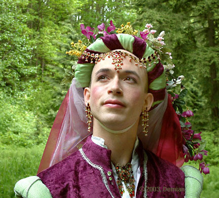
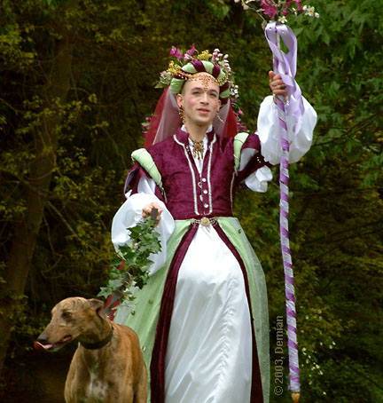
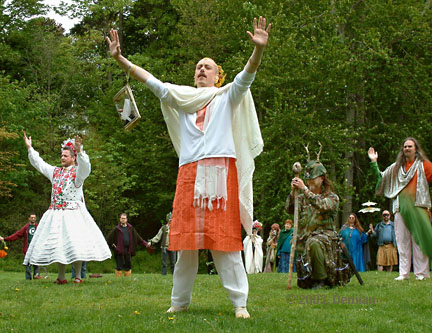
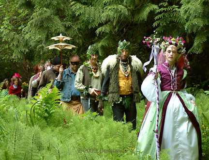
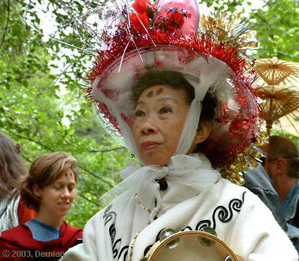
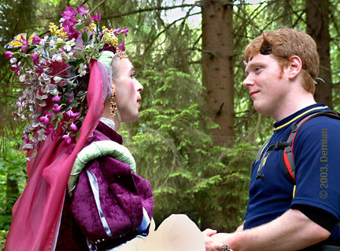
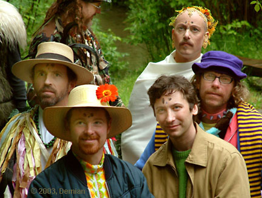
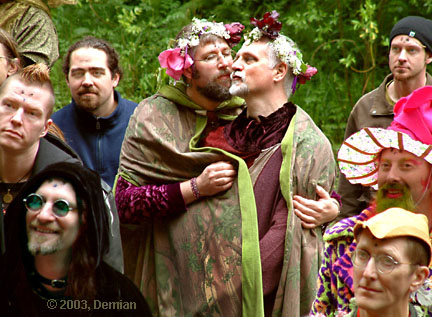

Goddess Ravenna Ravine - 2003
Images by Demian
|
The Goddess Ravenna Ravine cordially invited all friends of the earth to her 15th celebration, traditionally held on the first Sunday in May. This year the parade and potluck occurred on May 4, 2003. About 60 people assembled in Cowan Park, in Seattle, Washington. Mostly comprised of Radical Faeries, the group participated in a ceremony designed to worship the Goddess, bring blessings to all who participated and to all those remembered. |
|
 Communing with Nature
 Entering the Circle of Worshipers
 Ceremony of the Four Directions
 Procession to the Secret Place
 Celebrant with Tambourine
 Receiving a Blessing
 Attending the Words of the Goddess
 Cherishing Each Other
|


| The images on this page were all shot using a Fuji S602 zoom digital camera. They are transferred from the camera’s storage media, a mini-hard drive, directly into the computer via an USB port. PhotoShop retouching. |
|
Return to: Photography and Illustration Table of Contents
Entire contents © 2003, Demian |
|
Demian Box 9685, Seattle, WA 98109-0685 206-935-1206 demian@buddybuddy.com www.buddybuddy.com |